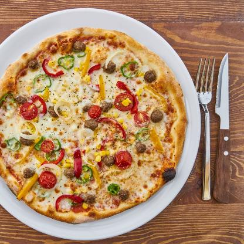

<!doctype html>
<meta charset="utf-8">

<link href="style.css" rel="stylesheet">

<script src="https://distill.pub/template.v1.js"></script>

<script type="text/front-matter">
  title: "YOLOv4 Receptive Field Visualization"
  description: "Just some interactive animations for visualizing YOLOv4 state of the art object detection approach."
  authors:
  - Christian Limberg: http://uni-bielefeld.de
  - Andrew Melnik: http://uni-bielefeld.de
  - Augustin Harter: http://uni-bielefeld.de
  - Helge Ritter: http://uni-bielefeld.de
  affiliations:
  - Bielefeld University: http://uni-bielefeld.de
  - Bielefeld University: http://uni-bielefeld.de
  - Bielefeld University: http://uni-bielefeld.de
  - Bielefeld University: http://uni-bielefeld.de
</script>

<dt-article>
  <h1>YOLO - You only look <strike>once</strike> 10647 times</h1>
  <!---  (52*52 + 13*13 + 26*26) * 3 = 10647 --->
  <h2>An enlightening look behind the scenes of YOLOv4<dt-cite key="bochkovskiy2020yolov4"></dt-cite> state-of-the-art object detection approach and what the <i>once</i> actually means</h2>
  <dt-byline></dt-byline>

<h2> Figure 1</h2>

<h3>Select grid size and image to visualize:</h3> 
<div id="size_select">
	</img>
	</img>
	</img>
</div>
<div id="fig_select">
	</img>
	</img>
	</img>
	</img>
	</img>
	</img>
	</img>
	</img>
	</img>
	</img>
</div>


<div class="m-page">


<canvas id="bbs" style="width:100%;"></canvas>


</div>


</dt-article>

<dt-appendix>
</dt-appendix>

<script type="text/bibliography">


@article{bochkovskiy2020yolov4,
  title={Yolov4: Optimal speed and accuracy of object detection},
  author={Bochkovskiy, Alexey and Wang, Chien-Yao and Liao, Hong-Yuan Mark},
  journal={arXiv preprint arXiv:2004.10934},
  year={2020}
}

</script>


<script src="js/jquery-3.4.1.min.js"></script>
<script src="js/grid_visu.js"></script>

